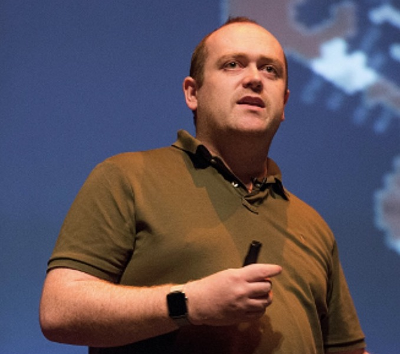

Digital Design Ethics conference
The Digital Design Ethics conference will be held on the 26th of November in the iconic Eye building in Amsterdam. It focuses on the important ethical aspects of our work as designers of digital products.
 Next: Talks
Next: Talks
Talks
Digital Design Ethics conference Amsterdam
Learn things from people who are better at your job than you
-

Amber Case
Amber Case believes technology should be designed not to intrude into your life but rather be available only when you need it. This might sound obvious but it is radically different from the way current technology constantly demands your attention.
-

Mike Monteiro
This outspoken author and ambassador of ethics in design will give his unfiltered opinion in a keynote talk. If that leaves you feeling angry, be sure to go to his workshop as well.
-

Cennydd Bowles
What role will ethics play in future technologies? Who decides what’s Good and Bad in the free market? Who will care? Veteran public speaker and acclaimed designer Cennydd Bowles, will answer these questions and prepare us for an uncertain future.
Workshops
Digital Design Ethics conference Amsterdam
Have people explain what you're doing wrong in a semi private setting
How to ethics
How not to not ethics!
How to seem ethical and avoid litigation
Programme
Digital Design Ethics conference Amsterdam
Our programme runs from 9am to 9pm and is ACTION PACKED
| Time | Speaker | Talk | Location |
|---|---|---|---|
| 9:30 | Door's open | Coffee & registration | Foyer |
| 10:00 | Organizers | Opening | Cinema 1 |
| 10:15 | Amber Case | Calm Technology | Cinema 1 |
| 11:00 | Break | Foyer | |
| 11:15 | Mike Monteiro | tba | Arena |
| 12:00 | Lunch | Foyer | |
| 13:00 | Workshops | tba | Different locations |
| 15:45 | Break | Foyer | |
| 16:00 | Cennydd Bowles | Future Ethics | Cinema 1 |
| 16:45 | Organizers | Closing | Cinema 1 |
| 17:00 | üçπDrinksüçπ | Foyer |
Venue
Digital Design Ethics conference Amsterdam
We are hosting this event in the iconic landmark called Eye. This amazing building situated in the harbour district and looking out over the Ij river hosts the national museum for film. Marvel in its unique architectural features while Amsterdam's skyline provides a stunning backdrop
Next: Contact